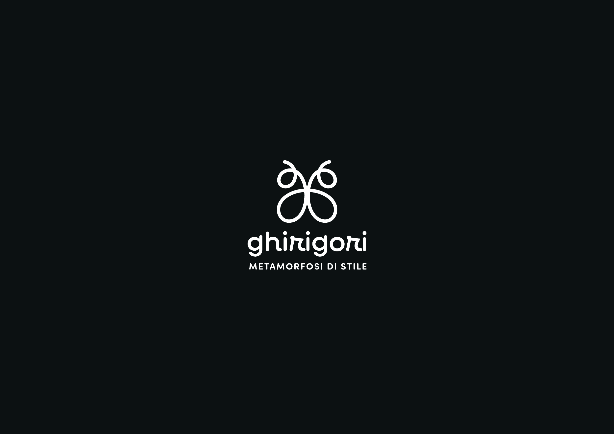
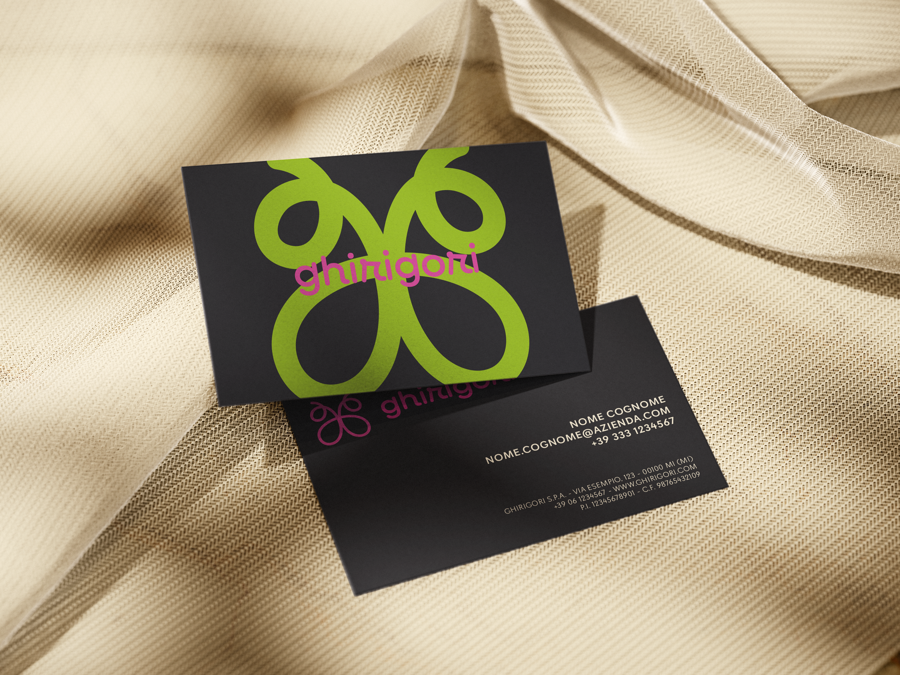
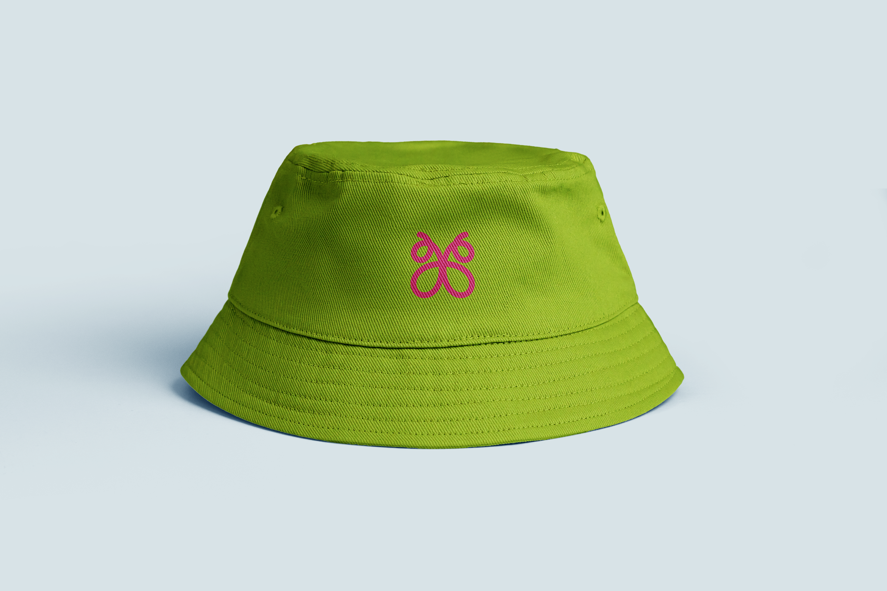
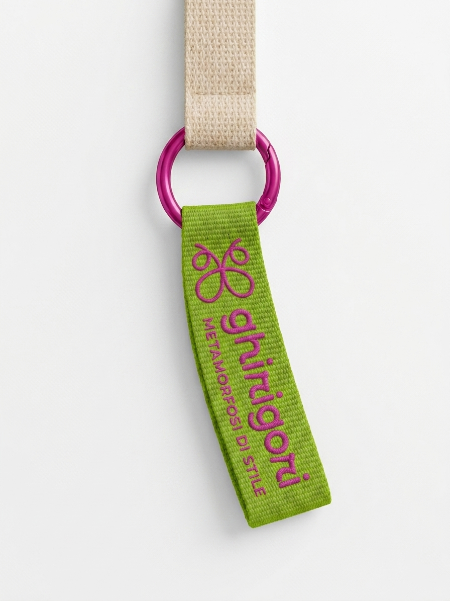
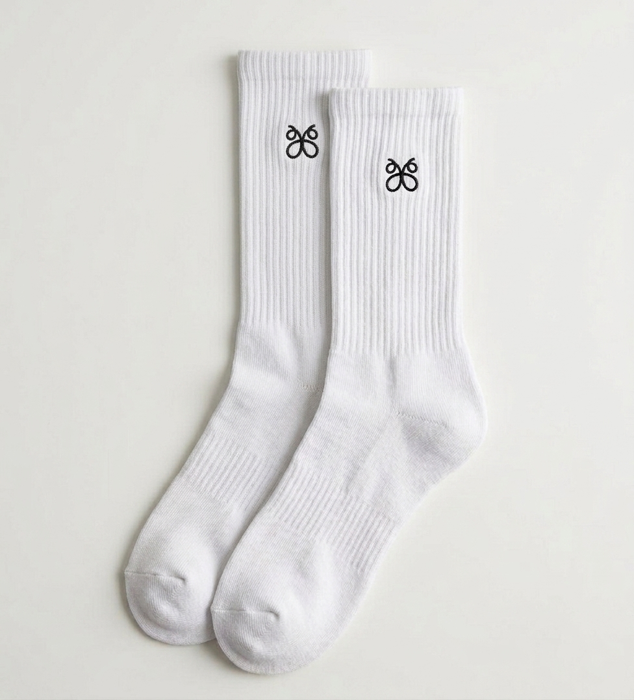
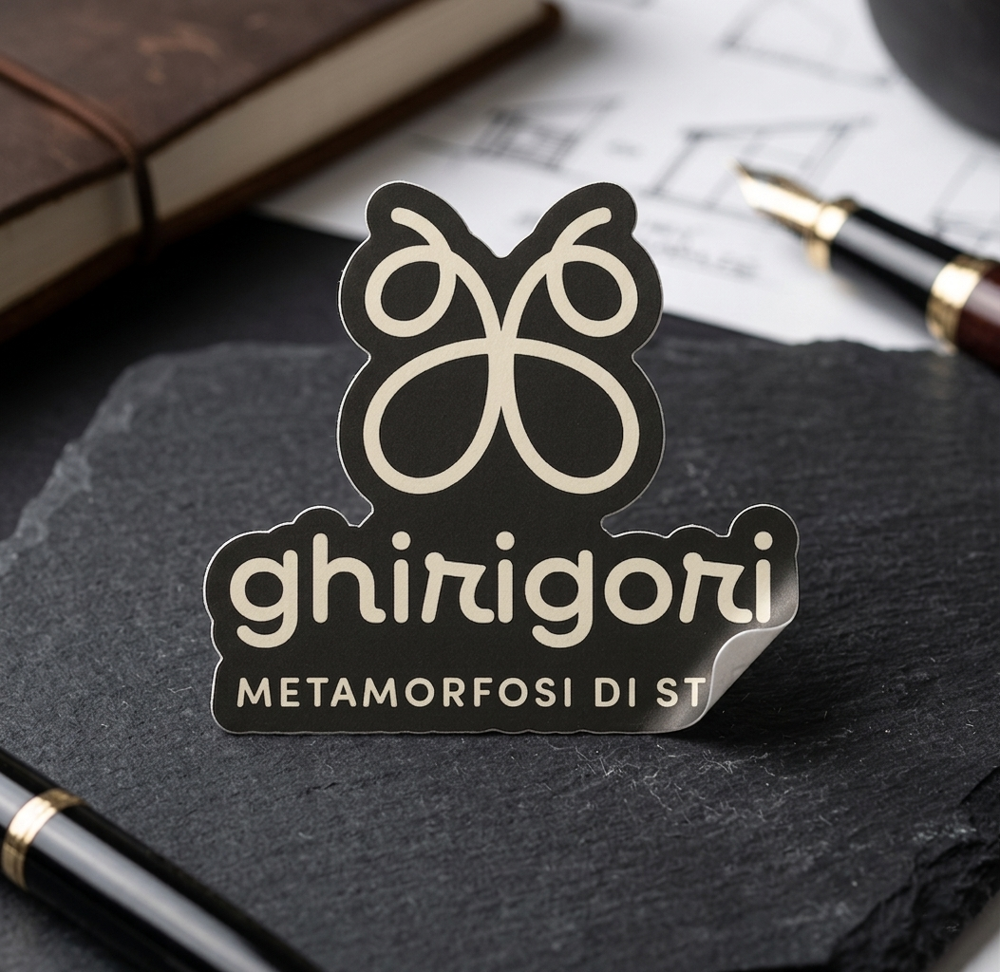
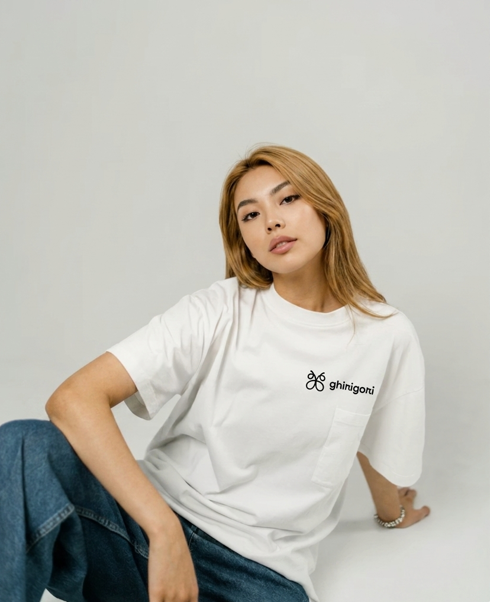

Ghirigori is a branding project that translates the artisanal heritage of embroidery into a contemporary visual identity. The brand's essence is captured through a symbol that merges craftsmanship with metaphor: two mirrored "g"s, formed by a single embroidery thread, intertwine to create a stylized butterfly. This figure serves as a powerful emblem of elegance, delicacy, and transformation, representing the added value that bespoke embroidery brings to a simple garment—much like a caterpillar evolving into a vibrant butterfly.







The logo design centers on the concept of the "thread" as a narrative tool. By weaving the brand's initials into a symmetrical butterfly, the visual mark synthesizes the transition from raw material to finished art. This metamorphosis is the core philosophy of Ghirigori: the embroidery is not merely a decoration, but a transformative element that elevates an ordinary piece of clothing into a unique expression of style. The resulting mark is minimalist yet deeply symbolic, ensuring high legibility across both digital and physical applications.
The visual identity is further expanded through a dynamic and playful language, specifically designed to resonate with a young, creative community. The organic lines of the logo are complemented by a vibrant and bold color palette, moving away from the traditional, muted tones of classic embroidery to embrace a more "pop" and energetic aesthetic. This chromatic choice highlights the versatility of the brand’s weaves and its ability to adapt to modern fashion trends.
The project is rounded out by a comprehensive identity system that includes custom packaging, communicative assets, and social media layouts. Every touchpoint, from the labels to the digital patterns, maintains a consistent focus on the "metamorphosis" theme. The final result is a brand that feels both artisanal and fresh, positioning Ghirigori as a leader in contemporary custom embroidery through a visual style that is as colorful and spirited as the products it represents.